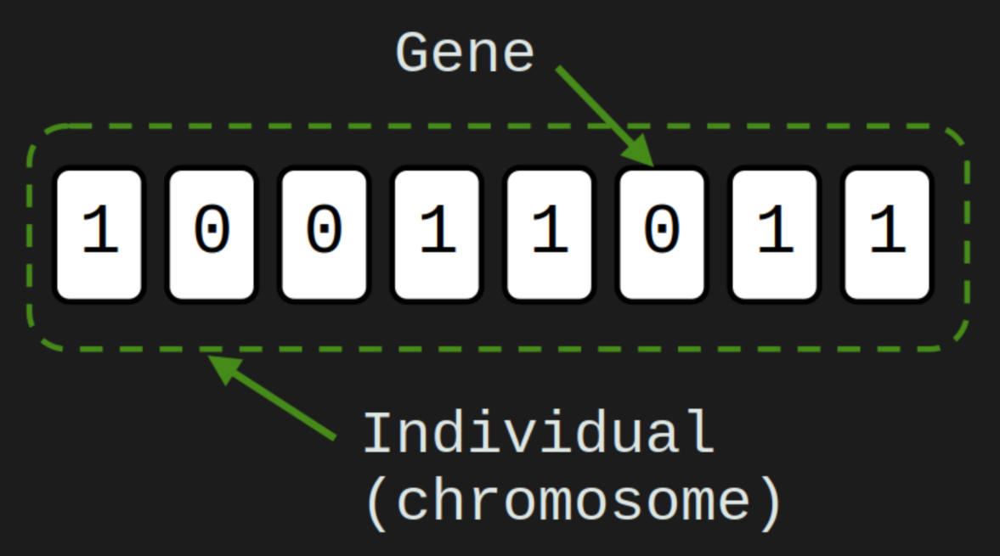
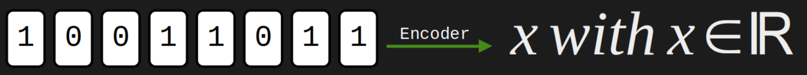
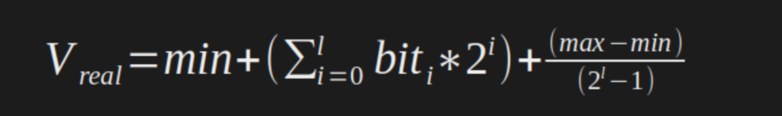
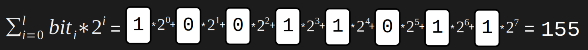
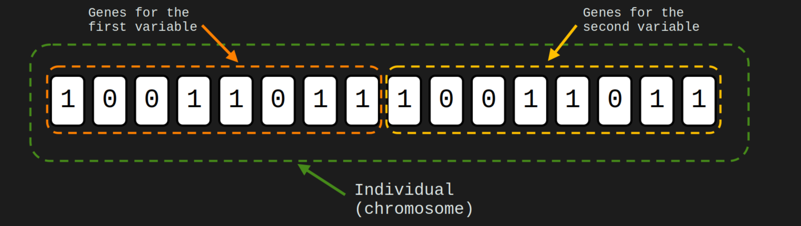
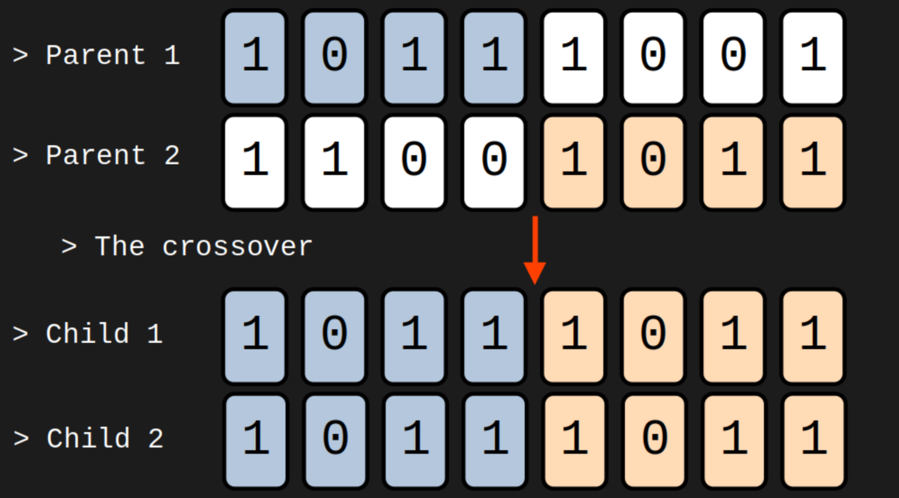
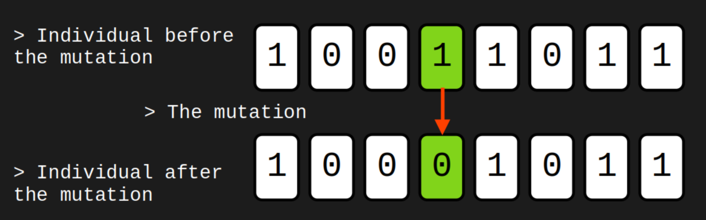
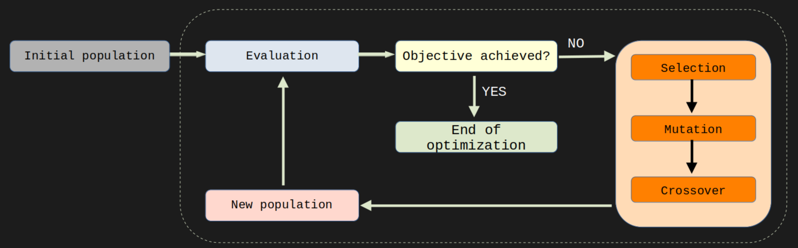

ALGORITMOS(1)ALGORITMOS(1)Genetic Algorithm (GA)> [ Home ][~]$ INTRODUCAOO algoritmo Genetic Algorithm (GA), é uma técnica de otimização baseada na seleção natural e reprodução biológica. Ele funciona de maneira semelhante a evolução natural, onde indivíduos mais adaptados ao ambiente são selecionados e têm maior chance de passar seus genes para a próxima geração. No algoritmo genético, uma população de soluções candidatas é criada e evoluída através de operações de seleção, cruzamento e mutação. O objetivo é encontrar a solução mais adaptada a um determinado problema, através de uma busca sistemática e eficiente por soluções melhores.
[~]$ PRELIMINARESAntes de mais nada, eh importante deixar claro aqui conceitos como genótipo e fenótipo, que são fundamentais no algoritmo genético.
> DEFINICOES
O genótipo é a representação interna do Indivíduo, ou seja, é a sua sequência de genes que carrega informações genéticas que determinam as suas características. No algoritmo genético, o genótipo é representado por uma cadeia de bits (ou cromossomo), que codifica a informação genética do Indivíduo. Como por exemplo, na sequencia de 8 bits abaixo (1 byte), cada bit representa um gene e os 8 bits juntos representam o Individuo (cromossomo):
Já o fenótipo é a manifestação externa das características do Indivíduo, ou seja, é a sua aparência, comportamento ou outra característica observável que é resultado da interação do genótipo com o ambiente. No algoritmo genético, o fenótipo é obtido a partir do genótipo, aplicando-se uma função de decodificação que transforma a informação genética em uma solução ou resultado que pode ser avaliado.
No algoritmo genético, o processo de seleção, crossover e mutação atua sobre o genótipo dos Indivíduos, permitindo a geração de novas soluções candidatas que serão avaliadas a partir do seu fenótipo. O objetivo do algoritmo é encontrar a solução que otimiza a função de avaliação a partir da manipulação do genótipo dos indivíduos ao longo das gerações.
E por ultimo, porem nao menos importante, temos a Populacao, que eh composta por 1 ou mais Individuos.>> CHECKPOINT <<
Conceitos que devem estar claros ate aqui: Populacao, Individuo e Gene.Principais caracteristicas:
- População: o algoritmo genético trabalha com uma população de indivíduos, permitindo explorar diversas soluções em paralelo e aumentando a chance de encontrar a melhor resposta.
- Seleção: o algoritmo genético utiliza um mecanismo de seleção natural, no qual indivíduos que possuem melhores características tendem a se reproduzir mais e, consequentemente, passar essas características para as próximas gerações.
- Crossover: através da combinação de dois indivíduos, o algoritmo genético cria novos indivíduos que podem apresentar combinações genéticas diferentes, possibilitando a variação genética na população.
- Mutação: o algoritmo genético introduz uma pequena chance de mutação nos indivíduos filhos, o que pode levar a novas características ou melhorias nas características já existentes.
- Codificação: o algoritmo genético utiliza uma codificação para representar os indivíduos, permitindo que eles possam ser processados por meio de operações matemáticas e lógicas.
- Avaliação Fitness: o algoritmo genético utiliza uma função de avaliação fitness para medir a qualidade de cada solução, com base nos seus objetivos e restrições.
[~]$ DESCRICAOA seguir uma explicacao mais detalhada de alguns operadores, porem, como vimos anteriormente, os individuos sao representados geralmente como sendo composto por genes binarios, isso torna a aplicacao dos operadores mais intuitiva. Dessa forma, quando queremos utilizar o GA para um problema em que a solucao sao numeros reais por exemplo, e nao bytes, devemos fazer a Codificacao e Decodificacao desses valores reais.
> OPERADORES
>> ENCODER/DECODER
Para os casos em que a solucao do problema sao valores reais, no momento em que formos avaliar se os Individuos da populacao sao ou nao bons candidatos, devemos converte-los de sua representacao binaria para um valor real.Existem algumas formas de fazer essa conversao, utilizaremos aqui a equacao abaixo, que faz uma conversao direta.A principio pode parecer uma equacao complicada, mas eh na realidade bem simples. A somatoria esta apenas fazendo a conversao de binario para decimal onde l eh o numero de genes (bits) que o individuo tem, a figura abaixo expande a somatoria.E o ultimo termo eh responsavel por adequar o valor da conversao para o intervalo desejado (tambe conhecido como map function).
Os valores de max e min dependem do problema, por exemplo, na conversao direta de binario para decimal, 1 byte (bin: 11111111) tem o valor de 255 em decimal. Porem, se quisermos adequar esse valor para ficar entre 0 e 100, definimos min=0 e max=100. E portanto, nessa escala, o valor 128 em binario (bin: 00000001) sera aproximadamente 50.
Nesse momento eh interessante que esse tipo de conversao esteja bem clara, se voce ainda nao estiver convencido do funcionamento desta conversao, faca alguns testes praticos com essa equacao. Eh importante ressaltar, que quanto maior o numero de genes por individuo (letra l na equacao), maior precisao a conversao tera.
Ok, mas uma pergunta honesta que pode ser feita neste momento eh, "mas e se a solucao do meu problema for mais de um valor?". Por exemplo, se o problema for uma funcao f(x, y) e voce quer encontrar x e y que minimize a funcao, e como x e y sao independentes, como faria?
Bom, nesses casos (que sao muito comuns), uma abordagem eh simplesmente multiplicar o numero de genes do Individuo pelo numero de variaveis independentes do problema (numero de dimensoes do problema). No exemplo da funcao f(x, y) acima, o numero de genes seria duplicado por Individuo.
A figura abaixo reprensenta essa divisao no Individuo. A parte matematica da conversao continua sendo exatamente a mesma, tendo apenas que levar em consideracao onde termina uma variavel e onde comeca a outra.>> CHECKPOINT <<
Conceitos que devem estar claros ate aqui: Conversao e Representacao de mais de uma variavel por Individuo.
>> SELECAO
A seleção é uma das etapas fundamentais do algoritmo genético e tem como objetivo escolher os indivíduos mais adaptados do grupo para gerar a próxima geração. Existem diferentes estratégias de seleção que podem ser utilizadas, tais como:Em resumo, a seleção é uma etapa crucial do algoritmo genético, pois é responsável por garantir que os indivíduos mais adaptados sejam mantidos e possam gerar descendentes igualmente adaptados.
- Seleção por torneio: Nessa estratégia, são escolhidos aleatoriamente alguns indivíduos da população e é selecionado o melhor entre eles para fazer parte da próxima geração. Esse processo é repetido até que sejam selecionados todos os indivíduos necessários para formar a próxima geração.
- Seleção por roleta: Nessa estratégia, cada indivíduo tem uma probabilidade proporcional à sua aptidão de ser selecionado para fazer parte da próxima geração. Quanto maior a aptidão do indivíduo, maior a sua probabilidade de ser escolhido.
- Seleção por classificação linear: Nessa estratégia, os indivíduos são ordenados de acordo com a sua aptidão e são selecionados os melhores, sendo que a probabilidade de ser escolhido diminui à medida que se avança na lista.
- Seleção por elitismo: Nessa estratégia, os melhores indivíduos da população são selecionados para fazer parte da próxima geração, sem sofrer nenhum tipo de alteração. Essa técnica garante que os indivíduos mais adaptados não sejam perdidos ao longo das gerações.
>> CROSSOVER
O crossover, também conhecido como recombinação genética, é uma das etapas essenciais do algoritmo genético. Ele é responsável por criar novas combinações de genes a partir dos pais selecionados na etapa de seleção, criando assim uma nova geração de indivíduos. O processo de crossover consiste em escolher dois indivíduos (ou pais) da população selecionada na etapa anterior e misturar aleatoriamente os seus genes, criando um novo indivíduo (ou filho). Esse processo é repetido até que sejam gerados todos os indivíduos necessários para a nova geração. Existem diversas técnicas de crossover que podem ser utilizadas, dentre as quais destacam-se:Iremos implementar mais adiante a primeira, Crossover de um ponto, que pode ser vista na imagem a seguir:
- Crossover de um ponto: Nessa técnica, um ponto é escolhido aleatoriamente na sequência de genes dos pais e os seus segmentos são trocados, gerando assim dois filhos.
- Crossover de dois pontos: Nessa técnica, dois pontos são escolhidos aleatoriamente na sequência de genes dos pais e os segmentos entre esses pontos são trocados, gerando assim dois filhos.
- Crossover uniforme: Nessa técnica, cada gene é escolhido aleatoriamente de um dos pais, gerando assim um novo filho.
- Crossover aritmético: Nessa técnica, os genes dos pais são combinados de forma ponderada, gerando assim um filho que é uma média ponderada dos pais.
O objetivo do crossover é aumentar a diversidade genética da população, permitindo a exploração de novas combinações genéticas que possam ser mais adaptadas ao ambiente em questão. É importante ressaltar que o sucesso do crossover depende tanto da escolha adequada da técnica de crossover quanto do tipo de problema a ser resolvido.
>> MUTACAO
A mutação é uma das etapas essenciais do algoritmo genético, juntamente com a seleção e o crossover. A sua função é introduzir variações aleatórias nos indivíduos da população, permitindo a exploração de novas soluções que possam ser mais adaptadas ao ambiente em questão. O processo de mutação consiste em alterar aleatoriamente um ou mais genes de um indivíduo da população. Essa alteração pode ocorrer de diversas formas, tais como:Iremos implementar mais adiante a primeira, Swap mutation, que pode ser vista na imagem a seguir:
- Mutação por troca: Nessa técnica, um gene é escolhido aleatoriamente e trocado por outro gene.
- Mutação por inversão: Nessa técnica, um segmento de genes é escolhido aleatoriamente e invertido.
- Mutação por inserção: Nessa técnica, um gene é escolhido aleatoriamente e inserido em uma posição aleatória da sequência de genes.
- Mutação por deleção: Nessa técnica, um gene é escolhido aleatoriamente e removido da sequência de genes.
É importante ressaltar que a taxa de mutação é um parâmetro importante do algoritmo genético, pois ela determina a frequência com que as mutações ocorrem na população. Se a taxa de mutação for muito baixa, pode ocorrer uma convergência prematura da população para um ótimo local. Por outro lado, se a taxa de mutação for muito alta, a população pode perder características importantes, comprometendo a sua adaptação ao ambiente. Em resumo, a mutação é uma etapa importante do algoritmo genético, pois permite a exploração de novas soluções, aumentando a diversidade genética da população. A taxa de mutação deve ser escolhida cuidadosamente, para evitar convergência prematura ou perda de características importantes da população.
> O ALGORITMO

- Uma populacao inicial eh gerada, usualmente aleatoria, porem, caso seja conhecida alguma informacao que ajude a conhecer a solucao do problema, essa informacao pode ser usada para gerar uma populacao inicial "mais adequada" ao problema.
- A populacao inicial eh entao avaliada, para saber o quao boa ela eh para o problema em questao.
- Caso ela ja seja boa o suficiente (essa suficiencia eh pre-definida e depende do problema, poder computacional, precisao desejada, etc ...), o algoritmo acaba ai, pois ja existe uma solucao boa o sufiente.
- Caso a populacao ainda nao seja uma solucao boa o suficiente eh entao aplicado os operadores do algoritmo.
- Que no caso do GA, podem ser: Selecao, Mutacao, Cruzamento, Elitismo (diversas variacoes desses operadores, bem como outros operadores foram ao longo do tempo sendo acrescentados no GA original e dao caracteristicas diferentes ao algoritmo, e pode ser uteis ou nao a depender do problema).
- Apos aplicados os operadores na populacao, uma nova populacao eh obtida com essas mudancas. Essa nova populacao pode ou nao ser mais adequada como solucao do problema.
- A nova populacao eh avaliada.
- Os passos 3-7 sao entao repetidos ate que se obtenha uma populacao que seja uma solucao suficientemente boa para o problema (ou, caso o numero maximo de geracoes pre-definido tenha sido alcancado).
[~]$ BORA FAZERVamos agora utilizar na pratica este algoritmo. Iremos programar em python3, e portanto, os requisitos sao:
A ideia aqui eh criar um codigo que seja escalavel e portanto facilmente adaptado para diversos tipos de problema. Dessa forma, pode ser que a principio algumas funcoes e abordagens parecam desnecessarias, mas como voces verao o codigo final sera um codigo que poderemos reutilizar facilmente.
- Python3 > [ Guia de instalacao ]
- Biblioteca Deap > [ Guia de instalacao ]
- Biblioteca Numpy > [ Guia de instalacao ]
- Biblioteca Matplotlib > [ Guia de instalacao ]
> CODING
Vamos agora finalmente colocar a mao na massa, e programar!! :)
A primeira coisa a se fazer no codigo eh importar as bibliotecas que serao utilizadas.As linhas de 1-4 estao importando algumas funcoes que utilizaremos da biblioteca Deap. As linhas de 5-8 sao bibliotecas nativa do python que utilizaremos e por fim, na linha 9 estamos importanto o arquivo fitFunction.py que devera estar na mesma pasta do codigo principal. Mais para frente trataremos deste arquivo.
1: from deap import base 2: from deap import benchmarks 3: from deap import creator 4: from deap import tools 5: import itertools 6: import random 7: import math 8: import time 9: import fitFunction
[~]$ REFERENCIAS E SUGESTOES
- Um excelente artigo que faz uma revisao do algoritmo GA:
Katoch, S., Chauhan, S.S. & Kumar, V. A review on genetic algorithm: past, present, and future. Multimed Tools Appl 80, 8091–8126 (2021). https://doi.org/10.1007/s11042-020-10139-6- Biblioteca DEAP utilizada nos codigos:
https://deap.readthedocs.io/en/master/
Félix-Antoine Fortin, François-Michel De Rainville, Marc-André Gardner, Marc Parizeau, Christian Gagné; 13(70):2171−2175, 2012.Uso deste artigo em referencias:
ECOGORA. Ecogora, © 2023. Conteúdos sobre computacao evolutiva. Disponível em: https://ecogora.vercel.app/. Acesso em: DIA MES. ANO.